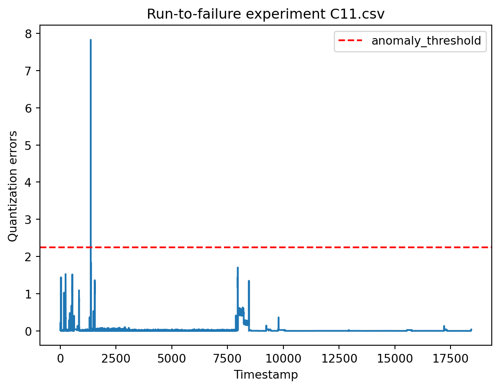
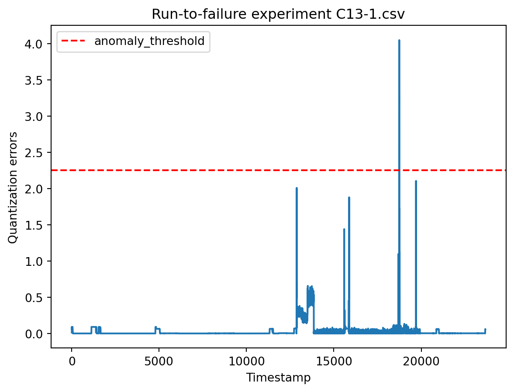
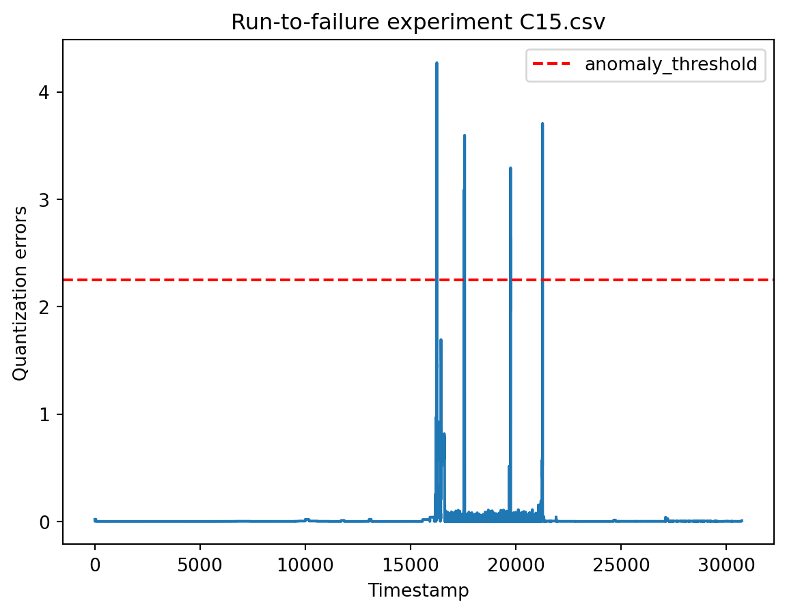
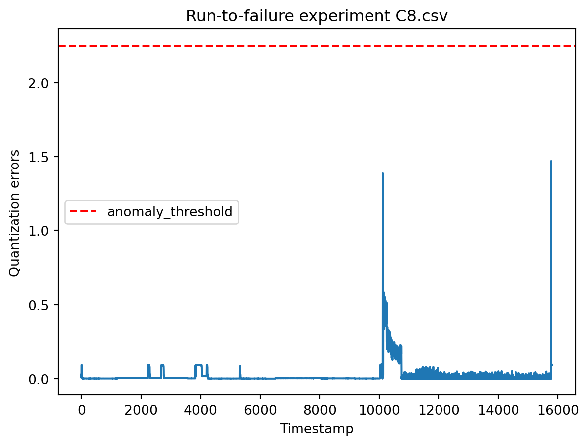

import pandas as pd
import numpy as np
import matplotlib.pyplot as plt
import osIntroduction
In the complex realm of manufacturing, ensuring the continuous health of machinery is paramount. This blog post delves into the realm of anomaly detection within the context of eight run-to-failure experiments from a production plant. The objective is clear: identify anomalies in machine behavior using a strategic combination of feature selection, autoencoder-based clustering, and quantization errors.
Loading and Preprocessing the Datasets
We with the loading of datasets from eight run-to-failure experiments. These datasets, capturing the intricate behavior of machines, are meticulously preprocessed to align timestamps and conditions.
| Timestamp | L_1 | L_2 | A_1 | A_2 | B_1 | B_2 | C_1 | C_2 | A_3 | ... | L_4 | L_5 | L_6 | L_7 | L_8 | L_9 | L_10 | A_5 | B_5 | C_5 | |
|---|---|---|---|---|---|---|---|---|---|---|---|---|---|---|---|---|---|---|---|---|---|
| 0 | 0 | -20.470767 | -49.583696 | -49.737023 | -60.125877 | -67.684702 | -67.213115 | -75.635206 | -75.398126 | -45.568737 | ... | -98.610796 | -77.922564 | -65.288020 | -21.577296 | -5.229818 | -20.021259 | -53.399733 | -100.0 | -100.0 | -100.0 |
| 1 | 1 | -4.874715 | -37.094569 | -25.009528 | -35.579886 | -33.459741 | -35.514754 | -33.369469 | -35.644538 | -51.259983 | ... | -98.610796 | -77.922564 | -59.527626 | -8.114661 | -7.114716 | -4.532685 | -52.568426 | -100.0 | -100.0 | -100.0 |
| 2 | 2 | 25.132878 | -40.673543 | -25.040018 | -35.461876 | -33.527460 | -35.659016 | -33.274612 | -35.644538 | -56.656587 | ... | -98.610796 | -77.922564 | -67.083467 | 22.033657 | -17.198404 | 25.123377 | -47.439417 | -100.0 | -100.0 | -100.0 |
| 3 | 3 | -90.508732 | -76.363862 | -25.238204 | -35.592998 | -33.459741 | -35.593443 | -33.396572 | -35.552789 | -52.903776 | ... | -98.610796 | -77.922564 | -98.546543 | -85.325157 | -41.011974 | -91.739428 | -93.192691 | -100.0 | -100.0 | -100.0 |
| 4 | 4 | -95.641610 | -62.582329 | -24.963793 | -35.488101 | -33.459741 | -35.449180 | -33.369469 | -35.552789 | -56.377452 | ... | -98.610796 | -77.922564 | -82.718820 | -92.213349 | -24.248745 | -96.082302 | -70.919928 | -100.0 | -100.0 | -100.0 |
| 5 | 5 | -95.641610 | -52.914129 | -24.963793 | -35.474989 | -33.419110 | -35.580328 | -33.342367 | -35.592110 | -53.973792 | ... | -98.610796 | -77.922564 | -82.718820 | -92.213349 | -24.336295 | -96.082302 | -67.704494 | -100.0 | -100.0 | -100.0 |
| 6 | 6 | -99.422931 | -79.731577 | -24.979038 | -35.658559 | -33.513916 | -35.501639 | -33.383021 | -35.618324 | -54.609599 | ... | -98.610796 | -77.922564 | -80.784439 | -93.639475 | -26.154242 | -97.555235 | -64.818446 | -100.0 | -100.0 | -100.0 |
| 7 | 7 | -99.422931 | -79.731577 | -25.161979 | -35.501213 | -33.378479 | -35.475410 | -33.355918 | -56.982764 | -54.547569 | ... | -98.610796 | -77.922564 | -80.784439 | -93.625214 | -25.438393 | -97.555235 | -61.101090 | -100.0 | -100.0 | -100.0 |
8 rows × 26 columns
exp_names=[all_datasets[i] for i in range(len(all_datasets)) if i not in ind]Feature Selection: Unveiling Significance with ROC Values
To identify the most crucial features, we employ a filter method using ROC values. Decision Tree classifiers come into play, predicting machine conditions and ranking features based on univariate ROC values. Filter method of feature selection per feature is employed: build decision tree, predict the target, make prediction rank feature on the basis of machine learning metric (we will use univariate roc values in this problem)
# we divide total timestamps into four equal parts and label each part to describe the condition of the machine
def labeler(i):
if i<= test_df.shape[0]//4:
return 0
elif i>test_df.shape[0]//4 and i <= 2*(test_df.shape[0]//4):
return 1
elif i > 2*(test_df.shape[0]//4) and i <= 3*(test_df.shape[0]//4):
return 2
else:
return 3
for i, test_df in enumerate(datasets):
test_df['machine_condition']=test_df.Timestamp.apply(labeler)
col=test_df.pop('machine_condition')
test_df.insert(1, 'machine_condition', col)from sklearn.model_selection import train_test_split
from sklearn.tree import DecisionTreeClassifier
from sklearn.metrics import roc_auc_score, mean_squared_error
def roc_scores():
X_train, X_test, y_train, y_test=train_test_split(test_df.iloc[:,2:], test_df['machine_condition'], train_size=0.8, random_state=0)
# univariate roc_auc
df_roc_values=pd.DataFrame()
roc_values = []
for feature in X_test.columns:
# if feature=='L_10':
dtc=DecisionTreeClassifier()
dtc.fit(X_train[feature].to_frame(), y_train)
y_pred_prob=dtc.predict_proba(X_test[feature].to_frame())
#extracting roc values for multiclass output var
for class_idx in range(y_pred_prob.shape[1]):
class_roc_scores = []
y_true_class = (y_test == class_idx).astype(int) # Convert to binary classification
y_pred_class = y_pred_prob[:, class_idx]
y_true_class = np.array(y_true_class)
y_pred_class = np.array(y_pred_class)
class_score=roc_auc_score(y_true_class, y_pred_class)
class_roc_scores.append(class_score)
# print(f"ROC AUC Score for Class {class_idx}: {auc_score}")
# Average ROC AUC score across all classes
avg_score = sum(class_roc_scores) / len(class_roc_scores)
roc_values.append(avg_score)
roc_values=pd.Series(roc_values)
return roc_valuesdf_roc=pd.DataFrame()
for i, test_df in enumerate(datasets):
roc_series=roc_scores()
df_roc=pd.concat([df_roc, roc_series], axis=1)
# print(df_roc)
df_roc.index=datasets[0].iloc[:,2:].columns
df_roc.columns=exp_names
df_roc = df_roc.T
df_roc.head(5)| L_1 | L_2 | A_1 | A_2 | B_1 | B_2 | C_1 | C_2 | A_3 | A_4 | ... | L_4 | L_5 | L_6 | L_7 | L_8 | L_9 | L_10 | A_5 | B_5 | C_5 | |
|---|---|---|---|---|---|---|---|---|---|---|---|---|---|---|---|---|---|---|---|---|---|
| C11.csv | 0.989719 | 0.800622 | 0.716381 | 0.805171 | 0.621604 | 0.612124 | 0.744775 | 0.715891 | 0.692415 | 0.808485 | ... | 0.980403 | 0.816665 | 0.887565 | 0.963003 | 0.730728 | 0.982077 | 0.666120 | 0.625770 | 0.948750 | 0.624316 |
| C13-1.csv | 0.989258 | 0.835711 | 0.629530 | 0.790779 | 0.805771 | 0.766042 | 0.547736 | 0.768802 | 0.642763 | 0.707533 | ... | 0.887741 | 0.985232 | 0.774679 | 0.635377 | 0.548002 | 0.911593 | 0.677480 | 0.670073 | 0.665349 | 0.659305 |
| C14.csv | 0.992529 | 0.781165 | 0.557617 | 0.687565 | 0.687223 | 0.689019 | 0.660716 | 0.690027 | 0.533338 | 0.686555 | ... | 0.988066 | 0.894792 | 0.896809 | 0.685654 | 0.540606 | 0.904820 | 0.693794 | 0.831570 | 0.807473 | 0.852070 |
| C15.csv | 0.993361 | 0.931253 | 0.554749 | 0.858519 | 0.638526 | 0.862530 | 0.546365 | 0.662041 | 0.774243 | 0.836862 | ... | 0.842338 | 0.634486 | 0.986360 | 0.649579 | 0.549271 | 0.902103 | 0.573459 | 0.571417 | 0.627396 | 0.593993 |
| C16.csv | 0.992478 | 0.842233 | 0.874162 | 0.840800 | 0.605960 | 0.840122 | 0.879170 | 0.707794 | 0.858725 | 0.817181 | ... | 0.950300 | 0.795837 | 0.942829 | 0.653904 | 0.537704 | 0.926012 | 0.575221 | 0.704839 | 0.627433 | 0.703330 |
5 rows × 25 columns
# selecting features with highest average roc score across all run-to-failure experiments
df_roc.mean().sort_values(ascending=False)[0:5]L_1 0.993399
L_9 0.937474
L_3 0.933457
L_4 0.927554
L_6 0.893747
dtype: float64Autoencoder for Anomaly Detection
With selected features in hand, the journey continues into the realm of autoencoders. Utilizing PCA as the foundation, we build an autoencoder to capture the essence of machine behavior.
from sklearn.preprocessing import StandardScaler
ss=StandardScaler()
for i, data in enumerate(datasets):
data.iloc[:,2:]=ss.fit_transform(data.iloc[:,2:])datasets_autoencoder=[]
for i,data in enumerate(datasets):
data=data.loc[:,['Timestamp','L_1','L_9','L_3','L_4','L_6']]
datasets_autoencoder.append(data)from sklearn.decomposition import PCA
pca = PCA(n_components=2)# we are not using train test split, because we want the representative data when machine is in best condition
# so we select first 5% timestamp of every experiments
training_data = np.vstack([data.iloc[:int(0.05 * len(data)),1:] for k,data in enumerate(datasets_autoencoder)])
transformed_data = pca.fit_transform(training_data)
# Calculate reconstruction errors for train_data
reconstructed_data = pca.inverse_transform(transformed_data)
reconstruction_errors = np.mean(np.square(training_data - reconstructed_data), axis = 1)Setting the Anomaly Detection Threshold
A crucial step in anomaly detection involves setting a threshold. We employ quantization errors to establish this threshold, a key parameter in distinguishing normal machine behavior from anomalies.
# Setting threshold for anomaly detection, in real-world is set manually based on the previous data of the machines
threshold = np.percentile(reconstruction_errors, 99.99)
print('threshold for anomaly detection:', threshold)threshold for anomaly detection: 2.2508852337037815Anomaly Detection in Action
With the stage set, we deploy our autoencoder on all run-to-failure datasets. The quantization errors are analyzed to pinpoint timestamps where anomalies in machine behavior occur.
for i, data_set in enumerate(datasets_autoencoder):
print(' ')
print(' ')
print('=====================dataset',exp_names[i],'========================')
# Detect anomalies in new_data
transformed_data = pca.fit_transform(data_set.iloc[:,1:].values)
new_data_reconstructed = pca.inverse_transform(transformed_data)
new_data_errors = np.mean(np.square(data_set.iloc[:,1:].values - new_data_reconstructed), axis=1)
#print(len(new_data_errors)==data_set.shape[0])
print('timestamp duration: 0 to', data_set.shape[0])
anomaly_timestamp=[]
for j in range(len(new_data_errors)):
if new_data_errors[j] > threshold:
anomaly_timestamp.append(j)
plt.plot(range(len(data_set.index)), new_data_errors)
plt.axhline(y=threshold, color='red', linestyle='--', label='anomaly_threshold'.format(threshold))
plt.xlabel('Timestamp')
plt.ylabel('Quantization errors')
plt.title('Run-to-failure experiment '+exp_names[i])
plt.legend()
plt.show()
if len(anomaly_timestamp)<=1:
print('No anomaly detected')
continue
else:
for k in range(len(anomaly_timestamp)-1):
if anomaly_timestamp[k+1]-anomaly_timestamp[k]<=10:
print('First instance of anomaly detected at Timestamp:', anomaly_timestamp[k])
break
=====================dataset C11.csv ========================
timestamp duration: 0 to 18429
No anomaly detected
=====================dataset C13-1.csv ========================
timestamp duration: 0 to 23670
First instance of anomaly detected at Timestamp: 18737
=====================dataset C14.csv ========================
timestamp duration: 0 to 32848
First instance of anomaly detected at Timestamp: 28477
=====================dataset C15.csv ========================
timestamp duration: 0 to 30737
First instance of anomaly detected at Timestamp: 16244
=====================dataset C16.csv ========================
timestamp duration: 0 to 21021
No anomaly detected
=====================dataset C7-1.csv ========================
timestamp duration: 0 to 51671
First instance of anomaly detected at Timestamp: 31657
=====================dataset C8.csv ========================
timestamp duration: 0 to 15803
No anomaly detected
=====================dataset C9.csv ========================
timestamp duration: 0 to 34245
First instance of anomaly detected at Timestamp: 13702




Conclusion
This blog post has navigated through the intricate process of anomaly detection in machine health. From feature selection using ROC values to the implementation of autoencoders and quantization errors, each step contributes to a comprehensive approach in identifying anomalies. The strategies presented here serve as a valuable toolkit for practitioners seeking to enhance machinery monitoring and predictive maintenance in industrial settings.